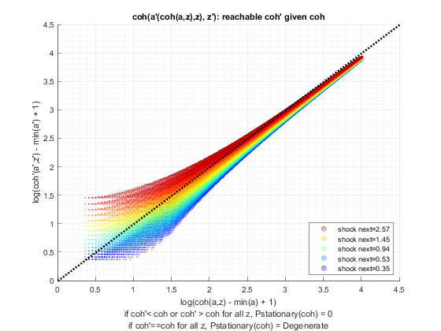
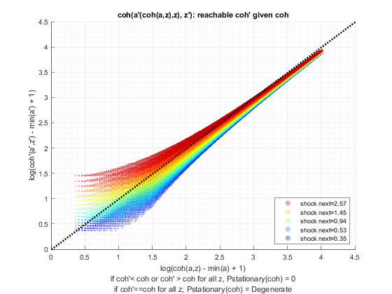
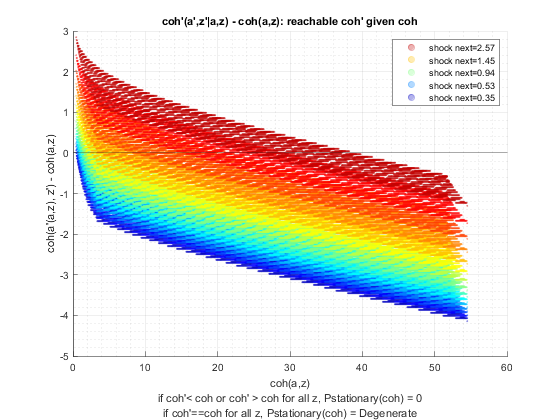

Test Preference (Savings Distribution)
back to Fan's Dynamic Assets Repository Table of Content.
Testing the ff_az_ds_vecsv program for solving the savings only dynamic programming problem.
defaults in ffs_az_set_default_param.m are:
- param_map('fl_beta') = 0.94;
- param_map('fl_crra') = 1.5;
here test three levels of discount:
- 0.87
- 0.925
- 0.97
for each shock, thest at these crra levels
- log (1)
- 1.5
- 2.0
@seealso
- SPEED savings only overall benchmark speed testing: fsi_az_ds_vecsv_speed
- PREFERENCE savings only preference testing: fsi_az_ds_vecsv_pref
- PREFERENCE savings only preference testing cross: fsi_az_ds_vecsv_pref_cross
- SHOCK savings only shock testing: fsi_az_ds_vecsv_shock
- SHOCK savings only shock testing cross: fsi_az_ds_vecsv_shock_cross
- PRICE savings only wage and interest rate testing cross: adjust wage and savings rate fsi_az_ds_vecsv_price_cross
Contents
Set Shared Parameters
close all; clear all; ar_fl_beta = [0.87, 0.925, 0.97]; ar_fl_crra = [1, 1.5, 2.0]; it_a_n = 750; it_z_n = 15;
Simulate Model with Discount = 0.87
for fl_crra = ar_fl_crra disp('xxxxxxxxxxxxxxxxxxxxxxxxxxx'); disp('xxxxxxxxxxxxxxxxxxxxxxxxxxx'); disp(['fl_beta = ' num2str(ar_fl_beta(1))]); disp(['fl_crra = ' num2str(fl_crra)]); disp('xxxxxxxxxxxxxxxxxxxxxxxxxxx'); disp('xxxxxxxxxxxxxxxxxxxxxxxxxxx'); disp(''); disp(''); disp(''); disp(''); % Call Default Parameters <https://fanwangecon.github.io/CodeDynaAsset/m_az/paramfunc/html/ffs_az_set_default_param.html ffs_az_set_default_param> bl_input_override = true; it_param_set = 9; [param_map, support_map] = ffs_az_set_default_param(it_param_set); % Simulation Accuracy param_map('it_a_n') = it_a_n; param_map('it_z_n') = it_z_n; param_map('fl_beta') = ar_fl_beta(1); param_map('fl_crra') = fl_crra; % Display Parameters support_map('bl_display') = false; support_map('bl_display_final') = false; support_map('bl_time') = true; support_map('bl_profile') = false; support_map('bl_graph_coh_t_coh') = true; % Call Grid Generator <https://fanwangecon.github.io/CodeDynaAsset/m_az/paramfunc/html/ffs_az_get_funcgrid.html ffs_az_get_funcgrid> [armt_map, func_map] = ffs_az_get_funcgrid(param_map, support_map, bl_input_override); % Call Dynamic Programming Problem <https://fanwangecon.github.io/CodeDynaAsset/m_az/solve/html/ff_az_vf_vecsv.html ff_az_vf_vecsv> result_map = ff_az_vf_vecsv(param_map, support_map, armt_map, func_map); % Call Distribution CProgram result_map = ff_az_ds_vecsv(param_map, support_map, armt_map, func_map, result_map, bl_input_override); % Snap snapnow; end % close all close all;
xxxxxxxxxxxxxxxxxxxxxxxxxxx
xxxxxxxxxxxxxxxxxxxxxxxxxxx
fl_beta = 0.87
fl_crra = 1
xxxxxxxxxxxxxxxxxxxxxxxxxxx
xxxxxxxxxxxxxxxxxxxxxxxxxxx
Elapsed time is 0.880602 seconds.
Elapsed time is 0.266772 seconds.
xxx All Variables PERCENTILES AND STATS xxx
tb_outcomes_meansdperc: mean, sd, percentiles
mean sd coefofvar min max pYis0 pYls0 pYgr0 pYisMINY pYisMAXY p0_1 p1 p5 p10 p15 p20 p25 p35 p50 p65 p75 p80 p85 p90 p95 p99 p99_9
________ ________ _________ _______ ______ _______ _____ ________ _________ _________ _______ _______ _______ _______ _______ _______ _______ ______ ______ ______ ______ ______ ______ ______ ________ _______ _______
cl_mt_pol_a 0.014958 0.070101 4.6866 0 43.725 0.91332 0 0.086683 0.91332 -7.33e-35 0 0 0 0 0 0 0 0 0 0 0 0 0 0 0.066756 0.33378 0.86782
cl_mt_coh 1.2953 0.47883 0.36966 0.44468 54.536 0 0 1 0.0027089 -7.33e-35 0.44468 0.59175 0.68262 0.78744 0.90837 0.90837 0.90837 1.0479 1.2088 1.3944 1.6085 1.6085 1.7454 1.8555 2.1405 2.9168 3.7648
cl_mt_pol_c 1.2804 0.43668 0.34106 0.44468 10.811 0 0 1 0.0027089 -7.33e-35 0.44468 0.59175 0.68262 0.78744 0.90837 0.90837 0.90837 1.0479 1.2088 1.3944 1.6085 1.6085 1.6786 1.8555 2.0737 2.6227 2.962


xxxxxxxxxxxxxxxxxxxxxxxxxxx
xxxxxxxxxxxxxxxxxxxxxxxxxxx
fl_beta = 0.87
fl_crra = 1.5
xxxxxxxxxxxxxxxxxxxxxxxxxxx
xxxxxxxxxxxxxxxxxxxxxxxxxxx
Elapsed time is 1.204153 seconds.
Elapsed time is 0.112406 seconds.
xxx All Variables PERCENTILES AND STATS xxx
tb_outcomes_meansdperc: mean, sd, percentiles
mean sd coefofvar min max pYis0 pYls0 pYgr0 pYisMINY pYisMAXY p0_1 p1 p5 p10 p15 p20 p25 p35 p50 p65 p75 p80 p85 p90 p95 p99 p99_9
________ _______ _________ _______ ______ _______ _____ _______ _________ __________ _______ _______ _______ _______ _______ _______ _______ ______ ______ ______ ________ ________ _______ _______ _______ ______ ______
cl_mt_pol_a 0.083735 0.23518 2.8087 0 45.995 0.74808 0 0.25192 0.74808 3.4466e-36 0 0 0 0 0 0 0 0 0 0 0.066756 0.066756 0.13351 0.26702 0.46729 1.2016 2.2029
cl_mt_coh 1.3658 0.6001 0.43937 0.44468 54.536 0 0 1 0.0027041 3.4466e-36 0.44468 0.59175 0.68262 0.78744 0.90837 0.90837 0.90837 1.0479 1.2088 1.3944 1.6085 1.677 1.8555 2.1292 2.5376 3.564 4.8641
cl_mt_pol_c 1.2821 0.41818 0.32617 0.44468 8.5411 0 0 1 0.0027041 3.4466e-36 0.44468 0.59175 0.68262 0.78744 0.90837 0.90837 0.90837 1.0479 1.2088 1.3944 1.6085 1.6102 1.7888 1.8606 2.0124 2.3992 2.7801
 
 xxxxxxxxxxxxxxxxxxxxxxxxxxx
xxxxxxxxxxxxxxxxxxxxxxxxxxx
fl_beta = 0.87
fl_crra = 2
xxxxxxxxxxxxxxxxxxxxxxxxxxx
xxxxxxxxxxxxxxxxxxxxxxxxxxx
Elapsed time is 0.996343 seconds.
Elapsed time is 0.113718 seconds.
xxx All Variables PERCENTILES AND STATS xxx
tb_outcomes_meansdperc: mean, sd, percentiles
mean sd coefofvar min max pYis0 pYls0 pYgr0 pYisMINY pYisMAXY p0_1 p1 p5 p10 p15 p20 p25 p35 p50 p65 p75 p80 p85 p90 p95 p99 p99_9
_______ _______ _________ _______ ______ _______ _____ _______ _________ __________ _______ _______ _______ _______ _______ _______ ______ ______ ______ _______ _______ _______ _______ _______ ______ ______ ______
cl_mt_pol_a 0.21493 0.44085 2.0511 0 47.263 0.55587 0 0.44413 0.55587 -8.771e-36 0 0 0 0 0 0 0 0 0 0.13351 0.20027 0.33378 0.46729 0.66756 1.1348 2.1362 3.5381
cl_mt_coh 1.5003 0.77889 0.51916 0.44468 54.536 0 0 1 0.0026651 -8.771e-36 0.44468 0.59175 0.68262 0.78744 0.90837 0.90837 1.0479 1.0479 1.2772 1.5313 1.7562 1.9418 2.1559 2.4826 3.03 4.3985 6.0957
cl_mt_pol_c 1.2854 0.39701 0.30887 0.44468 7.2728 0 0 1 0.0026651 -8.771e-36 0.44468 0.59175 0.68262 0.78744 0.90837 0.90837 1.0452 1.0479 1.2088 1.3961 1.5429 1.6152 1.7237 1.8021 1.9586 2.319 2.6049


Simulate Model with Discount = 0.925
close all for fl_crra = ar_fl_crra disp('xxxxxxxxxxxxxxxxxxxxxxxxxxx'); disp('xxxxxxxxxxxxxxxxxxxxxxxxxxx'); disp(['fl_beta = ' num2str(ar_fl_beta(2))]); disp(['fl_crra = ' num2str(fl_crra)]); disp('xxxxxxxxxxxxxxxxxxxxxxxxxxx'); disp('xxxxxxxxxxxxxxxxxxxxxxxxxxx'); disp(''); disp(''); disp(''); disp(''); % Call Default Parameters <https://fanwangecon.github.io/CodeDynaAsset/m_az/paramfunc/html/ffs_az_set_default_param.html ffs_az_set_default_param> bl_input_override = true; it_param_set = 9; [param_map, support_map] = ffs_az_set_default_param(it_param_set); % Simulation Accuracy param_map('it_a_n') = it_a_n; param_map('it_z_n') = it_z_n; param_map('fl_beta') = ar_fl_beta(2); param_map('fl_crra') = fl_crra; % Display Parameters support_map('bl_display') = false; support_map('bl_display_final') = false; support_map('bl_time') = true; support_map('bl_profile') = false; support_map('bl_graph_coh_t_coh') = true; % Call Grid Generator <https://fanwangecon.github.io/CodeDynaAsset/m_az/paramfunc/html/ffs_az_get_funcgrid.html ffs_az_get_funcgrid> [armt_map, func_map] = ffs_az_get_funcgrid(param_map, support_map, bl_input_override); % Call Dynamic Programming Problem <https://fanwangecon.github.io/CodeDynaAsset/m_az/solve/html/ff_az_vf_vecsv.html ff_az_vf_vecsv> result_map = ff_az_vf_vecsv(param_map, support_map, armt_map, func_map); % Call Distribution CProgram result_map = ff_az_ds_vecsv(param_map, support_map, armt_map, func_map, result_map, bl_input_override); % Snap snapnow; end % close all close all;
xxxxxxxxxxxxxxxxxxxxxxxxxxx
xxxxxxxxxxxxxxxxxxxxxxxxxxx
fl_beta = 0.925
fl_crra = 1
xxxxxxxxxxxxxxxxxxxxxxxxxxx
xxxxxxxxxxxxxxxxxxxxxxxxxxx
Elapsed time is 1.074147 seconds.
Elapsed time is 0.100148 seconds.
xxx All Variables PERCENTILES AND STATS xxx
tb_outcomes_meansdperc: mean, sd, percentiles
mean sd coefofvar min max pYis0 pYls0 pYgr0 pYisMINY pYisMAXY p0_1 p1 p5 p10 p15 p20 p25 p35 p50 p65 p75 p80 p85 p90 p95 p99 p99_9
_______ _______ _________ _______ ______ _______ _____ _______ _________ ___________ _______ _______ _______ _______ _______ _______ _______ ______ ______ ________ _______ _______ _______ ______ ______ ______ ______
cl_mt_pol_a 0.18804 0.41746 2.2201 0 47.53 0.58398 0 0.41602 0.58398 -4.0408e-34 0 0 0 0 0 0 0 0 0 0.066756 0.20027 0.26702 0.40053 0.6008 1.0013 2.0694 3.5381
cl_mt_coh 1.4727 0.75572 0.51314 0.44468 54.536 0 0 1 0.0026784 -4.0408e-34 0.44468 0.59175 0.68262 0.78744 0.90837 0.90837 0.97679 1.0479 1.2088 1.4825 1.7365 1.8822 2.0875 2.4142 2.9616 4.3188 6.0407
cl_mt_pol_c 1.2847 0.40033 0.31162 0.44468 7.0058 0 0 1 0.0026784 -4.0408e-34 0.44468 0.59175 0.68262 0.78744 0.90837 0.90837 0.97679 1.0479 1.2088 1.3961 1.5418 1.6147 1.7237 1.8005 1.9573 2.319 2.6015

xxxxxxxxxxxxxxxxxxxxxxxxxxx
xxxxxxxxxxxxxxxxxxxxxxxxxxx
fl_beta = 0.925
fl_crra = 1.5
xxxxxxxxxxxxxxxxxxxxxxxxxxx
xxxxxxxxxxxxxxxxxxxxxxxxxxx
Elapsed time is 1.498900 seconds.
Elapsed time is 0.233660 seconds.
xxx All Variables PERCENTILES AND STATS xxx
tb_outcomes_meansdperc: mean, sd, percentiles
mean sd coefofvar min max pYis0 pYls0 pYgr0 pYisMINY pYisMAXY p0_1 p1 p5 p10 p15 p20 p25 p35 p50 p65 p75 p80 p85 p90 p95 p99 p99_9
_______ _______ _________ _______ ______ _______ _____ _______ _________ ___________ _______ _______ _______ _______ _______ _______ ______ ______ _______ _______ _______ _______ ______ ______ ______ ______ ______
cl_mt_pol_a 0.49033 0.79674 1.6249 0 48.732 0.35663 0 0.64337 0.35663 5.0021e-38 0 0 0 0 0 0 0 0 0.13351 0.40053 0.66756 0.80107 1.0681 1.4686 2.1362 3.7383 5.8077
cl_mt_coh 1.7826 1.1056 0.62019 0.44468 54.536 0 0 1 0.0025063 -1.2936e-37 0.44468 0.59175 0.68262 0.78744 0.90837 0.93387 1.0479 1.2088 1.4584 1.8049 2.1667 2.4164 2.7451 3.2219 4.0034 5.8926 8.219
cl_mt_pol_c 1.2923 0.36845 0.28512 0.44468 5.8042 0 0 1 0.0025063 -1.2936e-37 0.44468 0.59175 0.68262 0.78744 0.90837 0.92429 1.0479 1.1196 1.2822 1.4291 1.5501 1.6269 1.6686 1.7537 1.9123 2.1893 2.4809
 
xxxxxxxxxxxxxxxxxxxxxxxxxxx
xxxxxxxxxxxxxxxxxxxxxxxxxxx
fl_beta = 0.925
fl_crra = 2
xxxxxxxxxxxxxxxxxxxxxxxxxxx
xxxxxxxxxxxxxxxxxxxxxxxxxxx
Elapsed time is 1.599754 seconds.
Elapsed time is 0.262317 seconds.
xxx All Variables PERCENTILES AND STATS xxx
tb_outcomes_meansdperc: mean, sd, percentiles
mean sd coefofvar min max pYis0 pYls0 pYgr0 pYisMINY pYisMAXY p0_1 p1 p5 p10 p15 p20 p25 p35 p50 p65 p75 p80 p85 p90 p95 p99 p99_9
_______ _______ _________ _______ ______ _______ _____ _______ ________ ___________ _______ _______ _______ _______ _______ ________ ________ _______ _______ _______ ______ ______ ______ ______ ______ ______ ______
cl_mt_pol_a 0.85479 1.1526 1.3484 0 49.466 0.19854 0 0.80146 0.19854 -1.5768e-34 0 0 0 0 0 0.066756 0.066756 0.13351 0.40053 0.80107 1.2016 1.4686 1.8024 2.3364 3.2043 5.2737 7.8772
cl_mt_coh 2.1562 1.4449 0.67013 0.44468 54.536 0 0 1 0.002212 -1.5768e-34 0.44468 0.59175 0.75104 0.85587 0.92429 1.0479 1.1163 1.3456 1.7321 2.2244 2.7033 3.0366 3.456 4.0585 5.0828 7.3473 10.201
cl_mt_pol_c 1.3014 0.34465 0.26483 0.44468 5.0698 0 0 1 0.002212 -1.5768e-34 0.44468 0.59175 0.75104 0.85587 0.90837 1.0469 1.0495 1.142 1.2906 1.4178 1.5268 1.5936 1.6636 1.7537 1.8689 2.1305 2.4045

Simulate Model with Discount = 0.97
close all for fl_crra = ar_fl_crra disp('xxxxxxxxxxxxxxxxxxxxxxxxxxx'); disp('xxxxxxxxxxxxxxxxxxxxxxxxxxx'); disp(['fl_beta = ' num2str(ar_fl_beta(3))]); disp(['fl_crra = ' num2str(fl_crra)]); disp('xxxxxxxxxxxxxxxxxxxxxxxxxxx'); disp('xxxxxxxxxxxxxxxxxxxxxxxxxxx'); disp(''); disp(''); disp(''); disp(''); % Call Default Parameters <https://fanwangecon.github.io/CodeDynaAsset/m_az/paramfunc/html/ffs_az_set_default_param.html ffs_az_set_default_param> bl_input_override = true; it_param_set = 9; [param_map, support_map] = ffs_az_set_default_param(it_param_set); % Simulation Accuracy param_map('it_a_n') = it_a_n; param_map('it_z_n') = it_z_n; param_map('fl_beta') = ar_fl_beta(3); param_map('fl_crra') = fl_crra; % Display Parameters support_map('bl_display') = false; support_map('bl_display_final') = false; support_map('bl_time') = true; support_map('bl_profile') = false; support_map('bl_graph_coh_t_coh') = true; % Call Grid Generator <https://fanwangecon.github.io/CodeDynaAsset/m_az/paramfunc/html/ffs_az_get_funcgrid.html ffs_az_get_funcgrid> [armt_map, func_map] = ffs_az_get_funcgrid(param_map, support_map, bl_input_override); % Call Dynamic Programming Problem <https://fanwangecon.github.io/CodeDynaAsset/m_az/solve/html/ff_az_vf_vecsv.html ff_az_vf_vecsv> result_map = ff_az_vf_vecsv(param_map, support_map, armt_map, func_map); % Call Distribution CProgram result_map = ff_az_ds_vecsv(param_map, support_map, armt_map, func_map, result_map, bl_input_override); % Snap snapnow; end % close all close all; clear all;
xxxxxxxxxxxxxxxxxxxxxxxxxxx
xxxxxxxxxxxxxxxxxxxxxxxxxxx
fl_beta = 0.97
fl_crra = 1
xxxxxxxxxxxxxxxxxxxxxxxxxxx
xxxxxxxxxxxxxxxxxxxxxxxxxxx
Elapsed time is 3.265750 seconds.
Elapsed time is 0.284320 seconds.
xxx All Variables PERCENTILES AND STATS xxx
tb_outcomes_meansdperc: mean, sd, percentiles
mean sd coefofvar min max pYis0 pYls0 pYgr0 pYisMINY pYisMAXY p0_1 p1 p5 p10 p15 p20 p25 p35 p50 p65 p75 p80 p85 p90 p95 p99 p99_9
______ _______ _________ _______ ______ _______ _____ _______ _________ __________ _______ _______ _______ _______ _______ ______ _______ ______ ______ ______ ______ ______ ______ ______ ______ ______ ______
cl_mt_pol_a 3.5901 3.5427 0.98681 0 50 0.06711 0 0.93289 0.06711 3.7744e-10 0 0 0 0.13351 0.40053 0.6008 0.86782 1.4686 2.6035 4.0053 5.2069 6.008 7.0761 8.4112 10.681 15.554 21.762
cl_mt_coh 4.9598 3.7889 0.76393 0.44468 54.536 0 0 1 0.0009622 3.1723e-11 0.51297 0.68262 0.90837 1.198 1.4717 1.7774 2.0875 2.7718 3.9458 5.4403 6.7724 7.6166 8.7114 10.146 12.488 17.525 23.975
cl_mt_pol_c 1.3698 0.28025 0.2046 0.44468 4.5358 0 0 1 0.0009622 3.1723e-11 0.51297 0.66017 0.89624 1.039 1.0895 1.142 1.2081 1.2798 1.3794 1.4812 1.5492 1.6019 1.6519 1.7099 1.8172 2.0119 2.2427


xxxxxxxxxxxxxxxxxxxxxxxxxxx
xxxxxxxxxxxxxxxxxxxxxxxxxxx
fl_beta = 0.97
fl_crra = 1.5
xxxxxxxxxxxxxxxxxxxxxxxxxxx
xxxxxxxxxxxxxxxxxxxxxxxxxxx
Elapsed time is 4.323743 seconds.
Elapsed time is 0.234260 seconds.
xxx All Variables PERCENTILES AND STATS xxx
tb_outcomes_meansdperc: mean, sd, percentiles
mean sd coefofvar min max pYis0 pYls0 pYgr0 pYisMINY pYisMAXY p0_1 p1 p5 p10 p15 p20 p25 p35 p50 p65 p75 p80 p85 p90 p95 p99 p99_9
______ _______ _________ _______ ______ ________ _____ ______ __________ __________ _______ _______ _______ _______ _______ ______ ______ ______ ______ ______ ______ ______ ______ ______ ______ ______ ______
cl_mt_pol_a 5.4081 4.7673 0.88152 0 50 0.025303 0 0.9747 0.025303 1.2197e-07 0 0 0.13351 0.53405 0.93458 1.3351 1.8024 2.6702 4.2056 6.0748 7.8104 8.8785 10.147 11.949 14.82 20.961 28.772
cl_mt_coh 6.8233 5.0167 0.73523 0.44468 54.536 0 0 1 0.00057637 6.7203e-09 0.51297 0.68262 1.1296 1.5997 2.0742 2.5506 3.0295 3.988 5.6323 7.614 9.393 10.488 11.815 13.693 16.673 23.012 31.1
cl_mt_pol_c 1.4152 0.27424 0.19378 0.44468 4.5358 0 0 1 0.00057637 6.7203e-09 0.51297 0.68262 0.968 1.0619 1.1463 1.2041 1.2422 1.3216 1.4183 1.5159 1.5952 1.6331 1.6877 1.7595 1.8589 2.0683 2.3223

xxxxxxxxxxxxxxxxxxxxxxxxxxx
xxxxxxxxxxxxxxxxxxxxxxxxxxx
fl_beta = 0.97
fl_crra = 2
xxxxxxxxxxxxxxxxxxxxxxxxxxx
xxxxxxxxxxxxxxxxxxxxxxxxxxx
Elapsed time is 4.497733 seconds.
Elapsed time is 0.277913 seconds.
xxx All Variables PERCENTILES AND STATS xxx
tb_outcomes_meansdperc: mean, sd, percentiles
mean sd coefofvar min max pYis0 pYls0 pYgr0 pYisMINY pYisMAXY p0_1 p1 p5 p10 p15 p20 p25 p35 p50 p65 p75 p80 p85 p90 p95 p99 p99_9
______ _______ _________ _______ ______ ______ _____ ______ __________ __________ _______ _______ _______ ______ ______ ______ ______ ______ ______ ______ ______ ______ ______ ______ ______ ______ ______
cl_mt_pol_a 7.2743 5.9232 0.81426 0 50 0.0148 0 0.9852 0.0148 2.4464e-06 0 0 0.40053 1.0013 1.6021 2.1362 2.8037 3.9386 5.9413 8.2777 10.347 11.682 13.218 15.421 18.825 26.235 35.447
cl_mt_coh 8.7362 6.1826 0.7077 0.44468 54.536 0 0 1 0.00034822 1.1243e-07 0.51297 0.78744 1.4558 2.1427 2.7825 3.3984 4.0585 5.2946 7.367 9.8195 11.982 13.32 14.962 17.2 20.754 28.349 37.86
cl_mt_pol_c 1.4619 0.27808 0.19022 0.44468 4.5358 0 0 1 0.00034822 1.1243e-07 0.51297 0.78744 1.0094 1.138 1.1737 1.2472 1.2767 1.361 1.4562 1.5552 1.6377 1.6865 1.742 1.8066 1.9273 2.1443 2.428